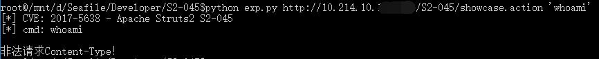

修复Struts2的S2-045漏洞
漏洞简介
最近批露，Apache Struts 2软件存在远程命令执行高危漏洞，Struts2官方已经确认该漏洞，漏洞编号为CVE-2017-5638，受影响的版本包括 Struts2.3.5 到 Struts2.3.31 以及 Struts2.5 到 Struts2.5.10 。黑客可以利用该漏洞通过浏览器在远程服务器上执行任意系统命令，对受影响站点造成严重影响，引发数据泄露、网页篡改、植入后门、成为肉鸡等安全事件。
目前，Struts 2软件作为网站开发的底层模板使用，特别是互动性较强的用于报名、注册、查询、留言的信息系统，我国内超过300万家政府网站及其子站使用了Struts框架。鉴于Struts 2应用广泛、黑客关注度较高、漏洞危害较大、攻击方式简单，一旦被别有用心人员利用，可能对我网络安全造成较大的危害和影响，建议各重要行业部门及时督促核查本部门、本行业、本辖区网站安全情况，及时堵塞漏洞，消除安全隐患，提高安全防范能力，并及时上报核查及整改情况。
exp
首先丢个exp，用于检验漏洞存在性：exp.S2-045.py
使用方法示例：
python exp.S2-045.py http://example.com/example.action "id"
解决过程
翻遍了官网和各种新闻，没有切实可行的方案，下载地址只有存在漏洞的2.3.31的版本，漏洞修复方案都是简略的一句升级到2.3.32，某些播报平台&官方真是mdzz，到底是为了促进漏洞修补还是促进全网被黑？
官方只是给了一个maven的配置方法，并没有直接可以下载的jar文件或zip包
只能按照官方的方法用maven去尝试构建一个struts应用(快速装好maven的方法是买个香港的vps用docker pull maven)，总算发现了新版的jar包下载地址：
https://repo.maven.apache.org/maven2/org/apache/struts/
通过下载2.3.31核心包发现只有struts2-core是需要的。
通过升级jar包修复
2.3.x版本修复方法
下载2.3.32版本的jar文件
https://repo.maven.apache.org/maven2/org/apache/struts/struts2-core/2.3.32/struts2-core-2.3.32.jar
国内CDN下载地址: https://d.py3.io/struts2-core-2.3.32.jar
假设服务器上用的是2.3.30版本，则tomcat所在目录/webapps/应用名称/WEB-INF/lib里面有一个struts2-core-2.3.30.jar
修复方法就是①把上述文件删掉(自行备份)，②下载到的新版jar文件改名为同名文件，③上传替换，④重启tomcat即可
Tip: 替换后要保证旧版的jar文件不存在，例如移到上一级目录，不要把旧版本的jar改名留在lib目录下，否则将导致这个webapp无法启动
2.5.x版本修复方法
下载2.5.10.1版本的jar文件
国内CDN下载地址：https://d.py3.io/struts2-core-2.5.10.1.jar
假设服务器上用的是2.5.10版本，则tomcat所在目录/webapps/应用名称/WEB-INF/lib里面有一个struts2-core-2.5.10.jar
修复方法同上
通过增加Filter修复
如果不方便替换jar包，可以通过本方法进行拦截攻击请求
① 将以下SecurityFilter.java文件编译成SecurityFilter.class，注意编译之前设置项目的兼容性级别，选择服务器版本的jdk，复制到应用的WEB-INF/classes目录下。
import java.io.IOException;
import javax.servlet.Filter;
import javax.servlet.FilterChain;
import javax.servlet.FilterConfig;
import javax.servlet.ServletException;
import javax.servlet.ServletRequest;
import javax.servlet.ServletResponse;
import javax.servlet.http.HttpServlet;
import javax.servlet.http.HttpServletRequest;
import javax.servlet.http.HttpServletResponse;
public class SecurityFilter extends HttpServlet implements Filter {
private static final long serialVersionUID = 1L;
public final String www_url_encode= "application/x-www-form-urlencoded";
public final String mul_data= "multipart/form-data";
public final String txt_pla= "text/plain";
public void doFilter(ServletRequest arg0, ServletResponse arg1,
FilterChain arg2) throws IOException, ServletException {
HttpServletRequest request = (HttpServletRequest) arg0;
HttpServletResponse response = (HttpServletResponse) arg1;
String contentType=request.getHeader("Content-Type");
if(contentType!=null&&!contentType.equals("")&&!contentType.equalsIgnoreCase(www_url_encode)&&!contentType.equalsIgnoreCase(mul_data)&&!contentType.equalsIgnoreCase(txt_pla)){
response.setContentType("text/html;charset=UTF-8");
response.getWriter().write("非法请求Content-Type！");
return;
}
arg2.doFilter(request, response);
}
public void init(FilterConfig arg0) throws ServletException {
}
}
假设服务器上的java -version告诉我们java的版本是1.7的，手里又没有当前网站的项目文件，需要这样进行编译：
eclipse新建一个工程，新建类复制以上代码，项目属性的Java Build Path中的Libraries添加tomcat中的servlet-api.jar，Java Complier页面中选择Complier compliance level为1.7
eclipse自动通过编译后，即可将此SecurityFilter.class文件传至服务器上的应用的WEB-INF/classes目录下。
② 将下面的代码加入WEB-INF/web.xml文件的第一个filter之前。
操作之前请记得备份
<filter>
<filter-name>SecurityFilter</filter-name>
<filter-class>SecurityFilter</filter-class>
</filter>
<filter-mapping>
<filter-name>SecurityFilter</filter-name>
<url-pattern>/*</url-pattern>
</filter-mapping>
如图所示

③ 重启应用即可
重启可以在tomcat的manager页面Reload应用，或者直接重启整个tomcat
如果应用无法启动，在tomcat下有logs目录可以看到为啥出错
测试效果

期待一个更负责任的漏洞披露过程，期待一个更加安全的互联网
Author: zjuchenyuan
Source: https://py3.io/S2-045.html